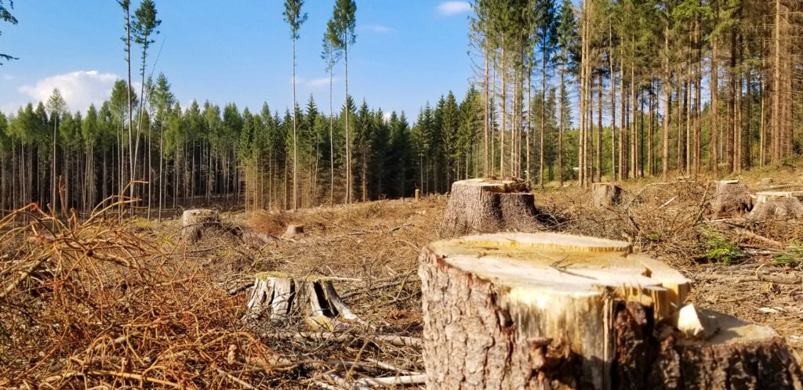

"Depletion Of Natural Resources"
Resource depletion is another negative impact of technology on the environment. ...
There are several types of resource depletion, with the most severe being aquifer depletion,
deforestation, mining forfossil fuels and minerals, contamination of resources, soil erosion
and overconsumption of resources
Deforestation
